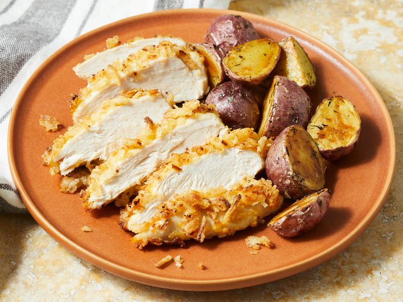

Crunchy French Onion Chicken

Awesome crunchy baked French onion chicken that goes well with any side dish. It's quick and easy too!
Ingredients
- 1 ⅓ cups French-fried onions, crushed
- 1 large egg, beaten
- 1 pound skinless, boneless chicken breast halves
- Gather all ingredients.
- Preheat the oven to 400 degrees F (200 degrees C).
- Spread crushed onions in a shallow bowl. Pour egg into a separate shallow bowl.
- Dip chicken into beaten egg, then press into crushed onions. Gently tap chicken to let loose pieces fall away. Place breaded chicken on a baking sheet.
- Bake chicken until no longer pink in the center and the juices run clear, about 20 minutes. An instant-read thermometer inserted into the center should read at least 165 degrees F (74 degrees C).